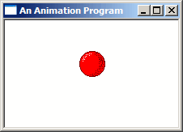

Example: anim_one
Once we have the structure type declared, we also declare a global instance of the struct. This is ok since we only have one ball, if were were going to animate a bunch of them, you'd probably want to use an array or other container (such as a linked list in C++) to store them in a more convenient way.
const int BALL_MOVE_DELTA = 2;
typedef struct _BALLINFO
{
int width;
int height;
int x;
int y;
int dx;
int dy;
}BALLINFO;
BALLINFO g_ballInfo;
We've also defined a constant BALL_MOVE_DELTA which is how far we want the ball to move on
each update. The reason we store deltas in the BALLINFO structure as well is that we want
to be able to move the ball left or right and up and down independantly, BALL_MOVE_DELTA
is just a handy name to give the value so we can change it later if we want.
Now we need to initialize this structure after we load our bitmaps:
BITMAP bm;
GetObject(g_hbmBall, sizeof(bm), &bm);
ZeroMemory(&g_ballInfo, sizeof(g_ballInfo));
g_ballInfo.width = bm.bmWidth;
g_ballInfo.height = bm.bmHeight;
g_ballInfo.dx = BALL_MOVE_DELTA;
g_ballInfo.dy = BALL_MOVE_DELTA;
The ball starts off in the top left corner, moving to the right and down according to the dx and dy members
of BALLINFO.
SetTimer(), it's not the best, and it's
not recommended for real multimedia or full games, however it's good enough for simple animations like this. When you
need something better take a look at timeSetEvent() in MSDN; it's more accurate.
const int ID_TIMER = 1;
ret = SetTimer(hwnd, ID_TIMER, 50, NULL);
if(ret == 0)
MessageBox(hwnd, "Could not SetTimer()!", "Error", MB_OK | MB_ICONEXCLAMATION);
Here we've declared a timer id so that we can refer to it later (to kill it) and then set the timer
in the WM_CREATE handler of our main window. Each time the timer elapses, it will send
a WM_TIMER message to the window, and pass us back the ID in wParam.
Since we only have one timer we don't need the ID, but it's useful if you set more than one timer
and need to tell them apart.
We've set the timer to elapse every 50 milliseconds, which results in approximately 20 frames per second. Approximately
because like I said, SetTimer() is a little inaccurate, but this isn't critical code, and a few milliseconds
here or there won't kill us.
WM_TIMER we want to calculate the new position for the ball and draw it's updated
position.
case WM_TIMER:
{
RECT rcClient;
HDC hdc = GetDC(hwnd);
GetClientRect(hwnd, &rcClient);
UpdateBall(&rcClient);
DrawBall(hdc, &rcClient);
ReleaseDC(hwnd, hdc);
}
break;
I've put the code for updating and drawing the ball in their own functions. This is good practice, and
it lets us draw the ball from either WM_TIMER or WM_PAINT without duplicating code, note that the method
we use to get the HDC in each case is different, so it's best to leave this code in the message handlers
and pass the result into the DrawBall() function.
void UpdateBall(RECT* prc)
{
g_ballInfo.x += g_ballInfo.dx;
g_ballInfo.y += g_ballInfo.dy;
if(g_ballInfo.x < 0)
{
g_ballInfo.x = 0;
g_ballInfo.dx = BALL_MOVE_DELTA;
}
else if(g_ballInfo.x + g_ballInfo.width > prc->right)
{
g_ballInfo.x = prc->right - g_ballInfo.width;
g_ballInfo.dx = -BALL_MOVE_DELTA;
}
if(g_ballInfo.y < 0)
{
g_ballInfo.y = 0;
g_ballInfo.dy = BALL_MOVE_DELTA;
}
else if(g_ballInfo.y + g_ballInfo.height > prc->bottom)
{
g_ballInfo.y = prc->bottom - g_ballInfo.height;
g_ballInfo.dy = -BALL_MOVE_DELTA;
}
}
All this does is some basic math, we add the delta value to the x position to move the ball. If the ball goes
outside the client area, move it back in range and change the delta value to the opposite direction so that the
ball "bounces" off the sides.
void DrawBall(HDC hdc, RECT* prc)
{
HDC hdcBuffer = CreateCompatibleDC(hdc);
HBITMAP hbmBuffer = CreateCompatibleBitmap(hdc, prc->right, prc->bottom);
HBITMAP hbmOldBuffer = SelectObject(hdcBuffer, hbmBuffer);
HDC hdcMem = CreateCompatibleDC(hdc);
HBITMAP hbmOld = SelectObject(hdcMem, g_hbmMask);
FillRect(hdcBuffer, prc, GetStockObject(WHITE_BRUSH));
BitBlt(hdcBuffer, g_ballInfo.x, g_ballInfo.y, g_ballInfo.width, g_ballInfo.height, hdcMem, 0, 0, SRCAND);
SelectObject(hdcMem, g_hbmBall);
BitBlt(hdcBuffer, g_ballInfo.x, g_ballInfo.y, g_ballInfo.width, g_ballInfo.height, hdcMem, 0, 0, SRCPAINT);
BitBlt(hdc, 0, 0, prc->right, prc->bottom, hdcBuffer, 0, 0, SRCCOPY);
SelectObject(hdcMem, hbmOld);
DeleteDC(hdcMem);
SelectObject(hdcBuffer, hbmOldBuffer);
DeleteDC(hdcBuffer);
DeleteObject(hbmBuffer);
}
This is essentially the same drawing code as the past few examples, with the exception that it gets the
position and dimentions of the ball from the BALLINFO structure. There is however one important difference...
HDC of the window, it's entirely possible that the screen
will get updated before you're done... for example after you draw the mask and before you draw the colour image
over top, the user might see a flicker of the back background before your program has a chance to draw over it
in colour. The slower your computer and the more drawing operations that you do, the more flicker will be apparent
and eventually it will look like a big jumbled mess.
This is terribly distracting, and we can solve it simply by doing all the drawing in memory first, and then
copying the completed masterpiece to the screen in a single BitBlt() so that the screen is updated
directly from the old image, to the complete new image with none of the individual operations visible.
To do this, we create a temporary HBITMAP in memory that is the exact size of the area we are going to
draw to on the screen. We also need an HDC so that we can BitBlt() to the bitmap.
HDC hdcBuffer = CreateCompatibleDC(hdc);
HBITMAP hbmBuffer = CreateCompatibleBitmap(hdc, prc->right, prc->bottom);
HBITMAP hbmOldBuffer = SelectObject(hdcBuffer, hbmBuffer);
Now that we have a place to draw to in memory, all of the drawing operations use hdcBuffer instead of
hdc (the window) and the results are stored on the bitmap in memory untill we are complete. We can now
copy the whole thing over to the window in one shot.
BitBlt(hdc, 0, 0, prc->right, prc->bottom, hdcBuffer, 0, 0, SRCCOPY);
That's it, and we clean up our HDCs and HBITMAPs as usual.
KillTimer() and pass in the ID that we used when
we created it.
KillTimer(hwnd, ID_TIMER);